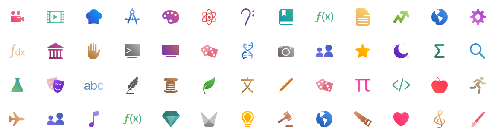

Sigma Planner
Your Personal School Planner
Sigma Planner is the perfect companion app for your academics that will help you track your classes and tasks with ease. It features a wide range of features to help you stay organized, as well as a beautiful design that is smooth, customizable, and adaptive for every device. With Sigma planner, you will never need to carry your school planner anymore; all your planner and school information is available on your iPhone, iPad, and Mac.

At its core, Sigma Planner is about improving your academic life through better organization. Tasks should always be easy to find. With filters, you will never lost a task! You can view tasks by the date they are due, by filtering through a wide variety of options, or by the specific course they are in.
Schools around the world have different schedule types, and Sigma Planner is fully equiped to handle just that. You can choose from Period-based classes with a set time on different days of the week, or Block-based classes which have classes recur on a different repeating days schedule, or even create a custom Time-based class that recurs every week if Period or Block do not fit your needs. On top of that, Sigma Planner also supports biweekly schedules for classes that recur once every two weeks.
You should not need to clear or clutter your timetable each time you move onto the next term or school year. Sigma Planner allows your to organize your courses by semesters, which will allow you to retain a history of your previous classes and assignments while staying on top of everything.
Design
Deisgn is at the heart of Sigma Planner. The app features a clean, simple, and intuitive interface. On top of that, Sigma Planner features over 50 course icons to customize each of your classes with. These course icons are also available as an iMesasge sticker pack that comes with the app so you can send them to your friends!

Moreover, Accessibility is incredibly important feature that ensures that everyone can use the app. Sigma Planner supports many native iOS and macOS accessibility features like Voice Control and Voice Over. The app is also adaptive to Dynamic Type, which will dynamically scale the text size based on your system preference.
iCloud Sync
With iCloud, your planner is everywhere and always in sync. You can edit your tasks from your iPhone and be able to view them right form your iPad or Mac as soon as you save. This allows you to jump between devices and never miss a class or task. There are no external accounts or logins required.

Widgets
Widgets on iOS 14 and macOS Big Sur allow you to quickly glance at your next class or task without needing to open the app. Sigma Planner offers three types of widgets that are customizble to display just the information you need.
- The Up Next widget shows your next tasks and class.
- The Course Detail widget allow you to focus on tasks of a single class.
- The Timetable widget displays your weekly timetable right from the home screen!
Optimized for iPad and Mac
While Sigma Planner started as a personal companion app for your iPhone, it is so much more than that today. It now features a sleek design optimized for each of the platforms it is available on. The iPad version of Sigma Planner supports many modern iPadOS features, like trackpad, keyboard, and multiple-window support as well as a dynamic interface that is adaptive between full-screen, split-screen, and slide-over mode.
The Mac version of Sigma Planner is fully optimized for the desktop environment and features a native Mac design. It takes advantage of the many capabilities of the Mac platform to make the app feel right at home, supporting multiple windows, keyboard shortcuts, and more.

Availability
Sigma Planner is available on the App Store for free on iPhone, iPad, and Mac. The iPhone and iPad app requires iOS 13.6, while Mac app requires macOS 11 Big Sur. It supports English, French, Chinese (Traditional), and Chinese (Simplified).
What's the catch?
There are none! The app is completely free with no ads, no in-app purchases, no feature-unlocks, and certainly no data-tracking. Privacy is incredibly important to me and I am a champion of ensuring that your data remains yours. This app was a passion project and a gift to students and teachers around the world who could benefit from the app as much as it had helped me through my high-school and university career.
Future of Sigma Planner
Due to certain work commitments, Sigma Planner is now in maintenance mode and will (very likely) no longer receive feature updates in the future. The app will continue to receive bug fix updates in the future. Thank you to everyone who has supported the app over these past 4 years, and I wish you all success in your academics!
Questions?
If you have any questions or feedback about Sigma Planner, please feel free to email me!